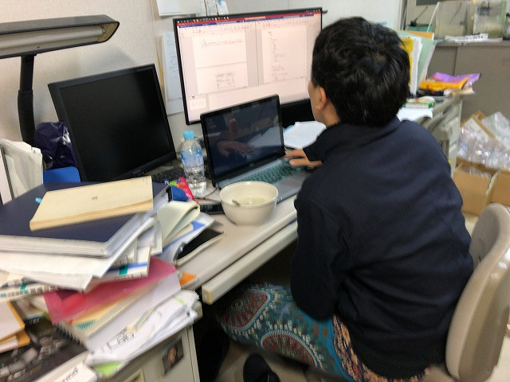

なんか、論文書いていると重いのはダメだし、軽いとおなか減るし、おかゆとかいいよね、と助教の人。七草がゆをみんなでいただきました。
いい塩梅でした
あんまりおなかいっぱいだと頭まわらないし

ちょうどいい
3時ごろに
さて
こうして
七草がゆの人
プログラム中にもぴったり
| ・ 七草がゆ (R02.01.07) | |||
なんか、論文書いていると重いのはダメだし、軽いとおなか減るし、おかゆとかいいよね、と助教の人。七草がゆをみんなでいただきました。 |
|||
|
いい塩梅でした |
あんまりおなかいっぱいだと頭まわらないし | ||
|
ちょうどいい |
3時ごろに | ||
|
さて |
こうして | ||
|
七草がゆの人 |

プログラム中にもぴったり | ||